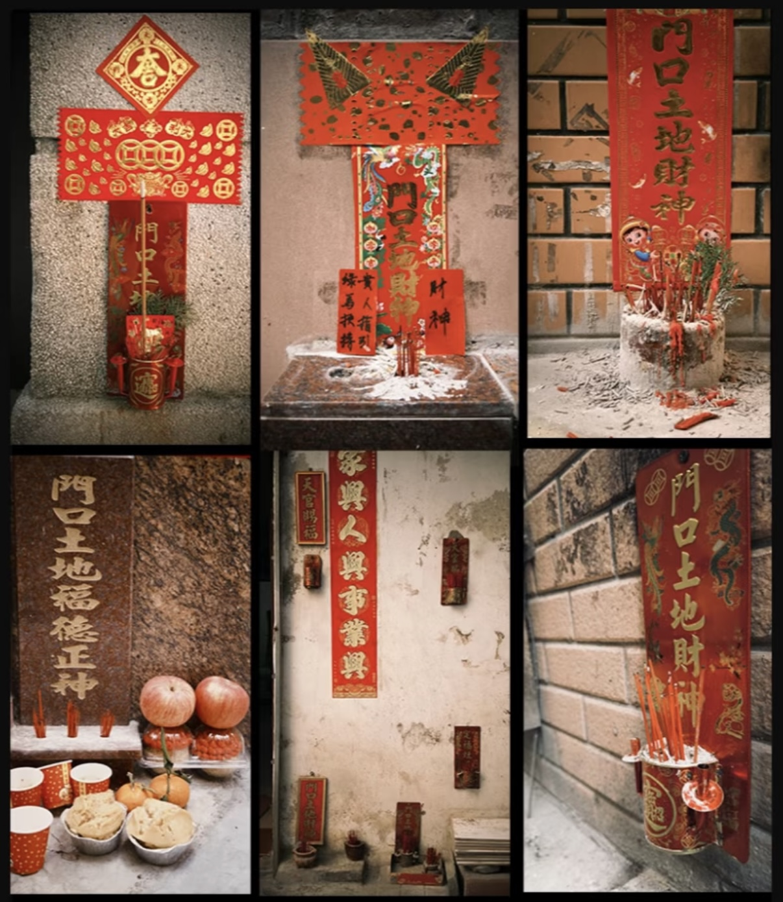

岭南大地，最贴近寻常百姓的信仰从不在巍峨庙堂，而在每户人家门口那一方寸小小神位。 这便是门口土地财神，不居高堂受万人朝拜，只静静安守家门地界，护佑一宅安稳、四时平顺。 一张小木牌，藏着粤人敬土安宅、务实守福的生活本心。
初入广东时，我便被这一方小小神祗所吸引，作为道教祖庭所在地——江西出生的我从小便浸润在道家神仙文化的信仰中， 平日所见的神像，皆是大殿之中高大庄严的塑像，居高临下，令人心生敬畏。 虽说平时也能见到路边村民所设的土地庙或五通庙，但它们都有庙宇的屋舍形制， 不像门口土地神一般，没有飞檐，没有殿宇，没有厚重塑像，简简单单一方小木牌直接贴在墙根处。
门口土地财神古称“中霤神”，在不同地区又有“地主神”“地主公”“厝宅公”等称谓， 闽台地区则称“地基主”“地祇主”“地居主”，粤港地区多称“门口土地财神”。

信仰起源
关于这一信仰的起源，综合相关资料大致可以分为三类说法：
《周礼》所规定的小五祀中的中霤之神
这里填写关于中霤之神的具体介绍文字。 可以介绍它的历史来源，以及它与后世土地神信仰之间的关系。
买地券信仰
这里填写关于买地券信仰的具体介绍文字。 可以介绍买地券的历史背景，以及它与土地、宅基之间的关系。
亡灵护佑说
这里填写关于亡灵护佑说的具体介绍文字。 可以介绍这种观点如何解释土地神与住宅之间的关系。
粤人祭拜门口土地财神，缘由格外朴素。在岭南人的传统观念中，土地承载万物， 房屋因地而立，生计也因地而兴，因此催生“有土便有财”的信念。 在民间的神明体系中，门口土地财神的品级不高，属于“阴神”。 可正因为神格较低，所司职责便更为具体，只守脚下这一寸土地、一户人家， 护佑宅基安稳，纳聚家门内外的财气福运。
于寻常百姓来说，这位神明虽没有震天的名号，却离烟火日常最近。 不必遥叩高天，家宅里大大小小的心愿，只需在门口点上三炷香， 便能被他悉数听见、照拂。